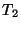
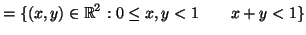
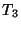
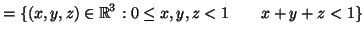
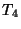
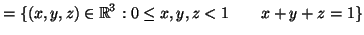
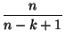

Next: The Fast Fourier Transform
Up: Random Numbers
Previous: Conveyor Belt sampling
Contents
Index
Questions 5 (Hints and solutions start on page ![[*]](file:/maths/faces/local/lib/latex2html-2K.1beta/icons/crossref.gif) .)
.)
Q 5.1
Show that if
X is any finite set and
X X
X is any
mapping then, for any
x  X
X, the sequence {
xi} defined by
x0 = x xi + 1 = (xi)
is
eventually
periodic; in other words, from some point in the sequence the sequence
is periodic from there on.
Q 5.2
In this and the following questions, assume that you have available a
random number generator RAND which produces random reals uniformly
distributed on [0, 1). So a statement like
x =
RAND will give you a
`random number'.
Consider the following sets
| T1 |
= {(x, y)  2 : 0 2 : 0 x, y < 1 y < x} x, y < 1 y < x} |
|
|  |
 |
|
|  |
 |
|
|  |
 |
|
A certain application requires you to produce a random sequence of
points in T1. How do you do this? Answer the same question for
T2.
Here are four ways to produce a sequence of points in T3. Each
application of the process produces one more point in the set. How do
they compare with regard to efficiency? Which of the four actually
produce a random sequence in T3?
- Method 1
-
repeat x = RAND, y = RAND, z = RAND
until
x + y + z < 1.
- Method 2
-
repeat
pick a random point (x, y) in T2,
z = RAND
until x + y + z < 1
- Method 3
-
pick a random point (x, y) in T2
repeat z = RAND until x + y + z < 1
- Method 4
-
pick a random point in T2
pick z at random from [0, 1 - x - y)
Finally, show how to obtain a random sequence of points in
T4.
Q 5.3
Some half-witted geographer wants you to produce for him a sequence of
points chosen randomly on the surface of the earth, for some kind of
statistical experiment. How do you set about producing points at
random on the surface of a sphere? (No, you don't pick a latitude at
random and then a longitude at random. Why? )
Q 5.4
Show how to generate random
n×
n symmetric matrices
with real elements in the range (- 1, 1).
Q 5.5
Suppose we want to generate random integers in the range
0...10
n - 1. One, slightly cranky, approach might be to choose each of the
n - 1 digits (0...9) randomly and then stick them together to
form the number. Does this give random integers? Prove it.
Q 5.6
The simplest algorithm for obtaining a random sample of
k items from
a list
x1,...,
xn is this:
count = 0
repeat
pick i at random from $1,2,...,n$
if $x_i$ has not yet been chosen then choose it and put count=count+1
until count = k
The only problem with this is its potential running time. The bigger k
is compared to n the more `doublers' we are going to have to reject.
The problem is to estimate how many choices we are going to have to make
before we get the k items that we want. The following crude argument
gives the right result. Let w(n, k) be the average waiting time,
i.e. number of choices made, in order to get a sample of k things from
n items. Then w(n, k) is w(n, k - 1) plus the expected number of
choices needed to obtain the final item (you must have found k - 1 items
before you find the kth!). Show that
w(n, k) = w(n, k - 1) + 
and deduce that
w(
n,
k) =
n
+

+
... +


=
n(
Hn -
Hn - k)
where
Hn is the
nth harmonic number.
Show that if n is reasonably large then we have the approximation
Q 5.7
In this question, you are given a random number generator
RAND() which produces random reals uniformly distributed in
[0, 1).
a) You are required to choose k objects `` at random'' from a
sequence of N objects -- perhaps passing on a conveyor belt. You
must decide whether a given object is to be selected before the
next one becomes available. Give pseudocode for such an algorithm,
and justify the assertion that it will produce exactly k items.
[You are not asked to justify that the sample is a random sample.]
b) Let T be the triangle with vertices at (0, 2), (- 1, 0)
and (1, 0). Describe an algorithm to generate a sequence of points
{pn} in T ``at random''. Your answer should produce an
additional point pn for each pair of calls to RAND().
Explain briefly why your algorithm does what is required.
Next: The Fast Fourier Transform
Up: Random Numbers
Previous: Conveyor Belt sampling
Contents
Index
Ian Craw
2001-04-27